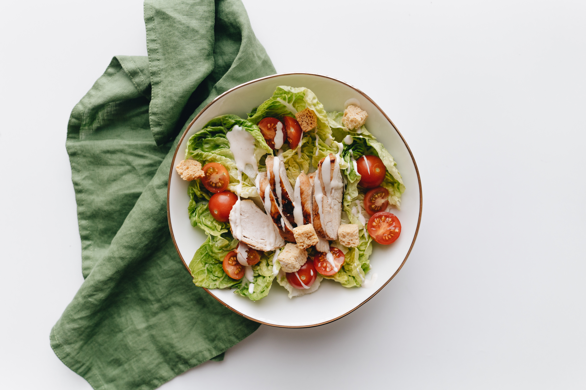
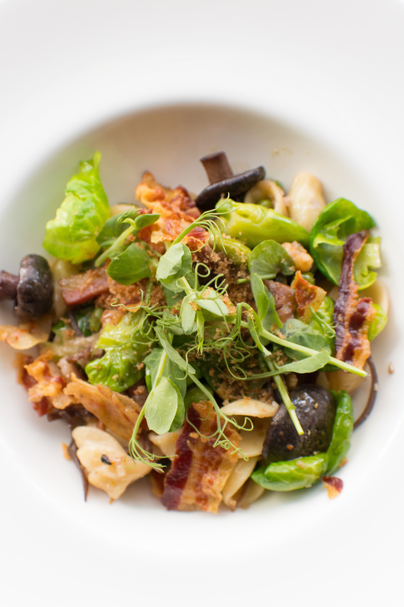

Most popular dishes Per Month
Start your day with salad
Vegetable Bowl
Craving for a salad with vegetable ? This is the recipe
Couscous and Fresh Rocket Salad
Ingredients
- 200 grams couscous
- 200 ml vegetable stock (or water)
- 1 small cucumber
- 1/2 red capsicum (bell pepper)
- 1 tomato
- Rocket leaves (arugula)
Dressing ingredients
- Extra virgin olive oli
- Salt
Preparations
- Heat 200 ml vegetable stock in a medium saucepan with salt and a teaspoon or so of olive oil.
- When it comes to a boil, remove the saucepan from the heat and add the couscous to the broth. Let sit and expand two or three minutes.
- Add a little more olive oil and stir gently with a fork or spoon to loosen and separate the grains. Let cool.
- Wash and chop the vegetables (tomato, capsicum, and cucumber) into small chunks. Chop the rocket leaves as well.
- Mix everything in a large salad bowl, and dress with extra virgin olive oil and salt if desired.
Description
It's a super refreshing salad and the bitterness of the rocket (arugula) leaves contrasts beautifully with the sweetness of the capsicum (peppers), cucumber and tomato. Above all it is an easy and quick salad to make. I recommend it not only because it is very healthy but because it’s delicious, too, and perfect for this hot summer weather. I hope you enjoy this lovely Mediterranean-inspired salad :)
Bacon Salad
Craving for a salad with bacon and warm egg ? This is the recipe
Lyonnaise salad (Warm Bacon and Egg Salad)
Preparations
- Fry the pieces of bacon in a frying pan until crispy, then add the bread and fry until golden.
- Remove and drain on kitchen paper.
- Meanwhile, poach the eggs. Bring a large saucepan of water to the boil and add a teaspoon of salt and the vinegar. Crack each egg into a small cup.
- Using a whisk, swirl the water and drop an egg into the middle. Turn down the heat and simmer for 2-3 minutes. Remove the egg with a slotted spoon and plunge into cold water. Repeat with the other egg.
- Whisk all the dressing ingredients in a large bowl. Add all the types of lettuce and gently toss together.
- Add the salad leaves on the plate, top with the bacon, croutons and tomatoes and place the poached egg on top of the salad
Description
This traditional French salad looks amazing, but is very simple to prepare. It’s three ingredients—bacon, a poached egg, and lettuce, dressed with a lemon, Dijon vinaigrette.
Ingredients
- 1 tbsp olive oil
- 4 slices smoked bacon, cut into 5cm pieces or slices
- 2 thick slices of bread, cut into cubes
- 2 eggs
- Salt
- 1 tbsp of white wine vinegar
- 150 gr of lamb’s lettuce
- 2 tomatoes in quarters
Dressing ingredients
- 2 tsp Dijon mustard
- 1 tbsp of lemon juice
- 3 tbsp olive oil
- Small shallot, finely diced
- Small garlic clove, crushed
- Sea salt and freshly ground black pepper
Fruit Bowl
Craving for a salad with variuos of fruits? This is the recipe
Spinach Salad with Blackberries, Mozzarella and Red Velvet Dressing

Ingredients
- 1 banana
- 1/2 papaya
- 1 mango
- 2 eggs
- Blueberries
- Grapes
- Raspberries
- 4 tablespoons oats
Dressing ingredients
- 2 (natural) Greek yogurts (around 300 grams total)
- 2 tablespoons honey
- 4 teaspoons Chía seeds
Preparations
- Peel mango and papaya, and use a Parissienne scoop (melon baller) to cut round sections of both fruits.
- Wash and thoroughly dry the grapes, blueberries and raspberries.
- Peel and slice banana.
- Mix yogurt and honey; this will serve as our salad “dressing”.
- Whisk all the dressing ingredients in a large bowl. Add all the types of lettuce and gently toss together.
- Arrange the fruits artfully in 4 bowls and add a tablespoon of oatmeal to each. Drizzle the yogurt and honey mixture and sprinkle with chia seeds, and enjoy!
Description
Fruits salads are quick and easy dishes to prepare at home, in the countryside or on the beach and contribute to a varied, balanced and healthy diet. Fruits are not only naturally sweet, with a great variety to choose from, but also provide vitamins, minerals, fibre, protein. After sport or a workout reward yourself with colour and vitality and enjoy this delicious fresh fruit salad with yogurt.
Viewer comment
Experience from our user
Really nice website.I always want to make a sald but i didn't know what type of sald i want.This website solve my problem.Thanks!
Christine
Is a really nice and convenience website.The step is simple and short and very suitable for us who rarely make ourself a lunch,breakfast or even dinner. Just need more recipe and recommend more varieties of salad.